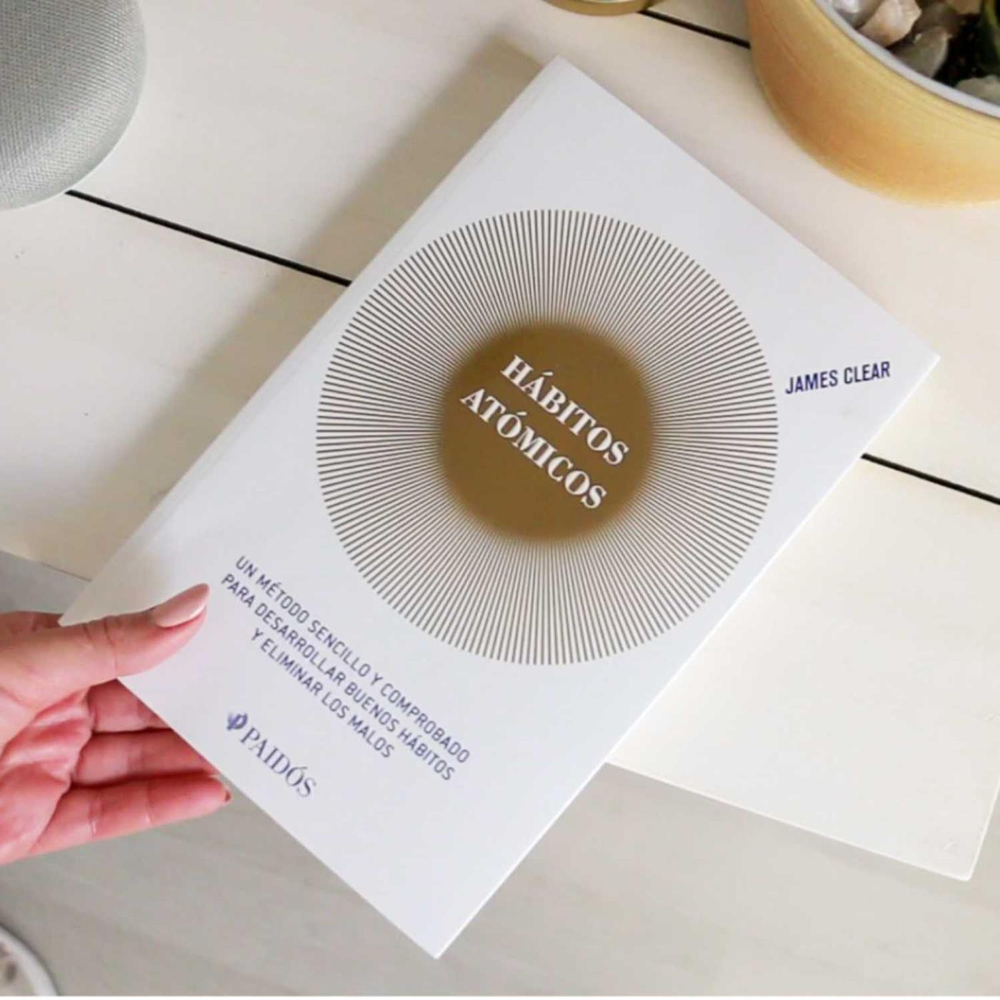
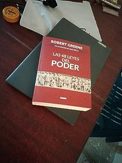
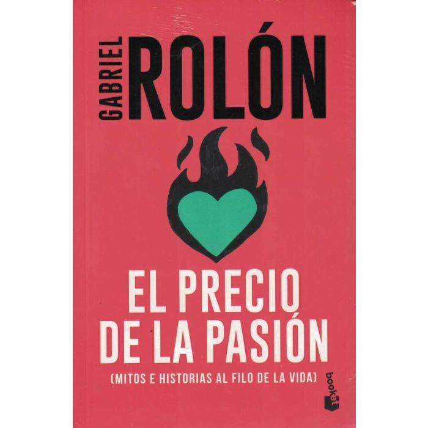
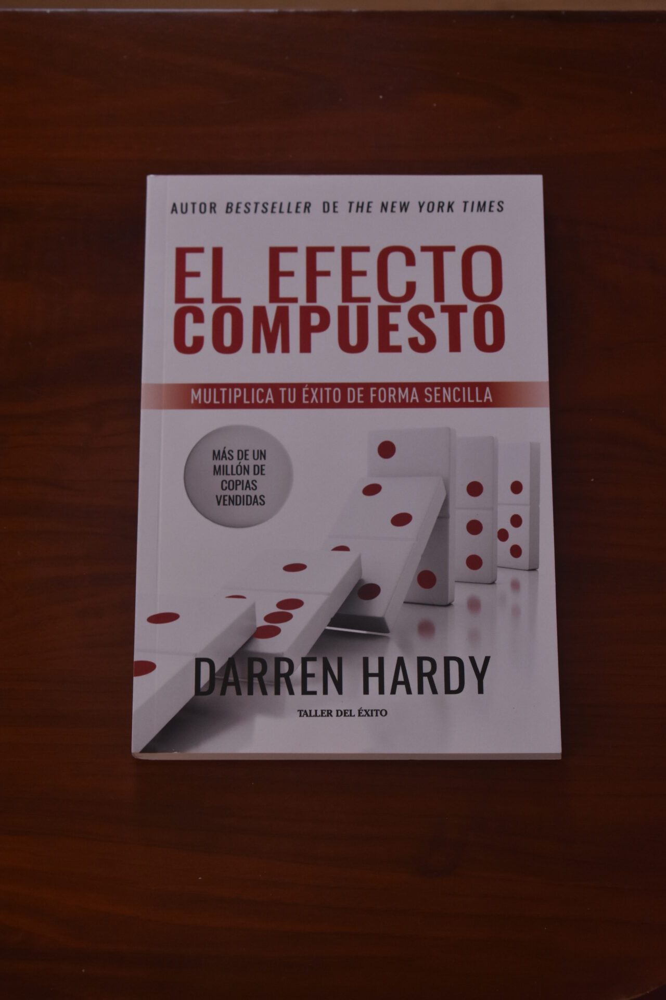

Deja De Ser Tú, De Joe Dispenza.
Editorial Urano, Tapa Blanda En Español, 2018

descripcion: Descubre las claves para transformar tu vida y alcanzar tu máximo potencial con las enseñanzas de Joe Dispenza, quien ofrece herramientas prácticas para el crecimiento personal y espiritual.
genero: Auto ayuda
ARS $17999
Hábitos Atômicos, De James Clear.
Vol. 1. Editorial Booket, Tapa Blanda En Español, 2023
descripcion: Descubre cómo los pequeños hábitos pueden tener un gran impacto en tu vida cotidiana y aprende estrategias efectivas para construir y mantener hábitos positivos con este libro de James Clear.
genero: Auto ayuda
ARS 14600
Las 48 Leyes Del Poder, De Greene, Robert.
Editorial Oceano En Español, 2019
descripcion: Explora las estrategias y tácticas de poder utilizadas por figuras históricas y líderes contemporáneos en este libro clásico de Robert Greene, una guía indispensable para entender y aplicar el poder en la vida cotidiana.
genero: Auto ayuda
ARS 27630
El Precio De La Pasión: N/a, De Gabriel Rolón
Serie N/aa Editorial Booket, Tapa Blanda, Edición N/a En Español, 2024
En esta obra, Gabriel Rolón nos sumerge en un viaje introspectivo explorando las complejidades de la pasión y sus consecuencias en la vida emocional y relacional de las personas, ofreciendo reflexiones profundas y casos clínicos que invitan a la reflexión y al autoconocimiento.
genero: Auto ayuda
ARS 11494
Las Leyes De La Naturaleza, De Robert Greene
Editorial Oceano, Tapa Blanda En Español, 2019

En este libro, Robert Greene nos lleva a un viaje introspectivo para explorar las leyes fundamentales que rigen la naturaleza humana y cómo comprender y aplicar estas leyes puede conducir al éxito y la realización personal en todas las áreas de la vida.
genero: Auto ayuda
ARS 27630
El Efecto Compuesto
Multiplica Tu Éxito De Forma Sencilla
En este libro, el autor nos introduce al poder del efecto compuesto, explicando cómo pequeñas acciones y decisiones tomadas de manera consistente pueden conducir a resultados extraordinarios a lo largo del tiempo, ofreciendo principios simples pero poderosos para alcanzar el éxito en cualquier área de la vida.
genero: Auto ayuda